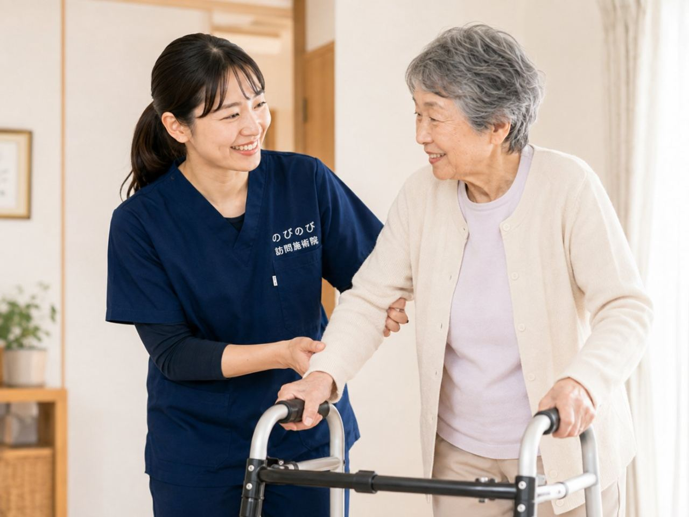

夜中に何度もトイレで目が覚めて眠れない、外出のあいだが気がかりで出かける気になれない、間に合わずにひやりとした。排尿にまつわる悩みは、年齢を重ねるほど身近になり、夜の眠りや外出への意欲、暮らしの心地よさを静かに削ります。人には打ち明けにくい話題ですが、まず泌尿器科など医療機関で原因を確かめるのが出発点です。鍼灸マッサージは、その土台の上で、お腹や腰の冷え・こわばりを和らげる補助のケアです。のびのび訪問施術院は、通院がむずかしい方のご自宅へ国家資格者がうかがいます。受診の目安もふまえ、在宅でできることをお伝えします。
この記事のポイント
頻尿や尿もれなど排尿の悩みは、前立腺・膀胱・感染症・糖尿病などさまざまな背景があり、まず泌尿器科などでの診察が第一です。尿に血が混じる・排尿時の強い痛み・発熱・急に尿が出ないときは、すぐに受診してください。鍼灸マッサージの出番は、その診療を土台に、お腹や腰・骨盤まわりの冷えやこわばり、めぐり、自律神経の面から支える補助です。訪問は1回3,950円、1割負担約395円。出張費は一律かからず、医師の同意書でご自宅に伺います。効果には個人差があります。
夜間頻尿や尿トラブルで、暮らしの質が下がっていませんか
トイレが近い、夜に何度も起きる、急に強い尿意に襲われる、間に合わずにもれてしまう。こうした排尿の悩みは、年齢を重ねるほど身近になります。とりわけ夜間の頻尿は眠りを細切れにし、日中の疲れやだるさ、気分の落ち込みにもつながります。外出のあいだトイレの心配がつきまとえば、出かける意欲そのものがしぼんでいきます。
口に出しにくい話題だけに、ひとりで抱え込みやすいのも排尿の悩みの特徴です。けれど、原因を医療機関で確かめたうえで体を整えていけば、暮らしの心地よさへ少しずつつなげていけます。在宅でのケア全般については総合ガイドもあわせてご覧ください。
血尿・強い痛み・発熱・急に尿が出ないときは、すぐ受診を
はじめに、いちばん大切なことをお伝えします。排尿の悩みには、じつにさまざまな原因が隠れています。尿に血が混じる、排尿のときに強く痛む、熱をともなう、急に尿が出なくなった。こうしたときは、感染症や結石、前立腺・膀胱の病気などが疑われますので、ためらわずに泌尿器科などをすぐに受診してください。
もれや回数が短い期間で急に増えた、強い尿意が続く、下腹部や腰の痛みをともなうといったときも、早めに医療機関へ相談を。私たち鍼灸マッサージの出番は、こうした医療機関での診断と治療を受けたうえで、体の冷えやこわばりを和らげる面からそっと補うことです。診断は医療機関の役割であり、その土台があってこそのケアだと考えています。
なぜ年齢を重ねると、尿が近くなるのでしょう
歳を重ねると、膀胱にためられる量や骨盤まわりの筋肉の働きが変わり、トイレが近くなる、夜に何度も起きる、突然強い尿意に襲われる、といった変化が出やすくなります。前立腺の肥大や膀胱の状態、糖尿病などの持病が関わることもあり、背景は一人ひとり異なります。
体の冷えや水分のとり方、日中の活動量、服用中のお薬が影響することもあります。だからこそ、自己判断で決めつけず、まず医療機関で原因を確かめることが第一歩です。そのうえで、暮らしのなかでできる工夫や、体を整える補いのケアを重ねていくと安心です。
伺ったときに、お腹や腰から確かめること
ご自宅にうかがうと、まずお腹や腰、骨盤まわりに手を当て、冷えていないか、筋肉が固くこわばっていないか、体全体のめぐりはどうかを確かめます。あわせて、一日のトイレの回数や夜起きる回数、水分のとり方、日中どのくらい体を動かせているか、どんなお薬を飲んでいるかもうかがいます。
排尿の悩みは、お腹や腰の緊張、体の冷え、自律神経のはたらきと結びついていることがたびたびあります。原因を診断するのは医療機関の役割ですから、主治医の診療を土台に、鍼灸マッサージとして整えられる部分はどこかを見きわめていきます。気になることは、そのつどうかがいながら進めます。
鍼とお灸・マッサージで、体をどう整えるか
鍼やお灸、やさしい手技には、お腹や腰、骨盤まわりを温めて血のめぐりを促し、固くなった筋肉をゆるめる働きが期待できます。体の芯の冷えが和らぐと、それだけで過ごしやすく感じられる方もいます。緊張しがちな自律神経の面から、リラックスして休みやすい体づくりのお手伝いができればと考えています。
のびのびでは、はり・きゅうにお腹や腰、足もとをやさしくゆるめる手技を、組み合わせます。これらに追加の料金はかかりません。ただし、これは頻尿や尿もれそのものを鍼灸で治すというものではありません。あくまで医療機関での診療という土台の上での、体を整える補いです。効果の感じ方には個人差があり、はっきり『治る』とお約束できるものではない点はご理解ください。
在宅で受けられる安心と、料金のこと
トイレが気になると、外出そのものがおっくうになります。移動中にトイレへ行けるか、施術の途中で我慢できるか。そうした気がかりから解放されるのが、家にうかがう施術のありがたさです。自分のトイレがすぐそこにある住み慣れた環境なら、急に催しても慌てず、落ち着いて体をいたわれます。
施術は医師の同意にもとづく医療保険（療養費）で受けられます。1回の総額は3,950円で、自己負担は1割の方で約395円です。別途の出張費や交通費は、対応エリア内であれば一律かかりません（料金に含みます）。この訪問鍼灸マッサージは介護保険の区分支給限度額とは別枠で、要介護認定は受けていなくても大丈夫ですが、医師の同意書が必要です。詳しい内訳は料金のページでご確認いただけます。頼み方に迷う方は「鍼灸の同意書を書いてもらえないとき」が役に立つかもしれません。
夜のトイレで転ばないために
夜に何度もトイレへ起きる方は、暗がりでの移動にとくに気をつけたいところです。寝ぼけたまま、あるいは急に立ち上がったときのふらつきで、転んでしまうことがあります。トイレまでの道に足もとを照らす明かりを用意する、壁や動線に手すりをつける、目が覚めてもすぐには動かずひと呼吸おく。こうした備えが、夜間の転倒を遠ざけます。
排尿の悩みと転倒予防は、切り離さず、あわせて考えておくと安心です。私たちも施術のなかで足腰の様子をみて、無理をしない形で体を動かしやすく整えるお手伝いをします。気になる段差や動線について、ご家族と一緒に見直しておくのもよいと思います。
冷やさない・水分・お薬｜家での工夫
施術とあわせて、暮らしのちょっとした工夫も助けになります。お腹や腰、足もとを冷やさないよう腹巻きやひざ掛けを使う、季節に合わせて温かい服装を心がける、冷たい飲み物をとりすぎない。体を温めることで過ごしやすく感じられる方もいます。その日の体に合わせて日中に体を動かすことも、めぐりの面で助けになります。
水分は必要な量をとりつつ、寝る前は少し控えめにするのもひとつの工夫です。ただし、水分を減らしすぎるのはかえって体によくないので、とり方は主治医に相談すると安心です。飲んでいるお薬が排尿に影響しているように感じるときも、自己判断でやめたりせず、必ず主治医に確かめてください。
見られたくない気持ちに、配慮しながら
排尿にまつわることは、人に見られたくない、知られたくないという気持ちがあって当然です。訪問では、そうしたお気持ちを受けとめながら施術を進めます。体を大きく出す必要はなく、必要なところだけをタオルで覆いながら行えます。中心はお腹や腰を温めたり足をゆるめたりするケアですから、身がまえずに受けていただけます。
住み慣れた家という落ち着ける場所でなら、夜のトイレの回数や外出のときの不安、眠りの浅さといった気がかりも、ぽつりぽつりとお話しいただけることがあります。うかがったお話をもとに、鍼灸マッサージとして整えられるところをお手伝いし、医療機関に相談したほうがよいと感じたことは、そのつどお伝えします。むせや飲み込みが気になる方は飲み込み・むせのケアもあわせてご覧ください。ひとりで抱え込まず、まず相談してみることを大切にしています。
よくある質問
頻尿や夜間頻尿は鍼灸で治りますか？
排尿の悩みは原因がさまざまで、まず泌尿器科など医療機関で診てもらうのが基本です。鍼灸マッサージは、お腹や腰の冷えやこわばりを和らげる補助として、診療を土台に負担にならない範囲でお手伝いする立場です。治すためのものではなく、効果には個人差があります。
どんなときに、先に受診したほうがよいですか？
尿に血が混じる、排尿時の強い痛み、発熱、急に尿が出ないといったときは、すぐに泌尿器科などを受診してください。もれや回数が急に増えたときも早めの相談が安心です。施術より受診を優先してください。
夜に何度もトイレで起きて眠れません。ケアできますか？
まず原因を医療機関で確かめることが第一です。そのうえで、お腹や腰の冷えをやわらげ、自律神経の面から休みやすい体づくりを補助としてお手伝いできる場合があります。夜間の転倒予防もあわせてご相談ください。
体を見られるのが恥ずかしいのですが、大丈夫でしょうか？
体を大きく出す必要はなく、必要なところだけをタオルで覆いながら施術できます。中心はお腹や腰を温めたり足をゆるめたりするケアですので、身がまえずに受けていただけます。こうしてほしいという希望は遠慮なくお伝えください。
料金はいくらですか？
1回の総額は3,950円、自己負担は1割の方で約395円です。別途の出張費はエリア内一律かからず、料金に含みます。介護保険の区分支給限度額とは別枠で受けられます。
介護保険を使っていなくても受けられますか？
要介護認定は不要です。介護保険の区分支給限度額とは別枠で、医師の同意書があればご利用いただけます。まずはお気軽にご相談ください。
飲んでいるお薬が排尿に影響している気がします。どうすれば？
お薬が排尿に影響しているように感じても、自己判断でやめたり量を変えたりせず、必ず主治医に確かめてください。水分のとり方についても、減らしすぎはかえってよくないため、主治医に相談すると安心です。
家族が気をつけることはありますか？
夜間の移動での転倒に注意し、足もとの明かりや手すりを整えておくと安心です。気づいた変化は主治医や看護のみなさんに伝え、受診の目安にあたるサインがあれば早めの受診につなげてあげてください。